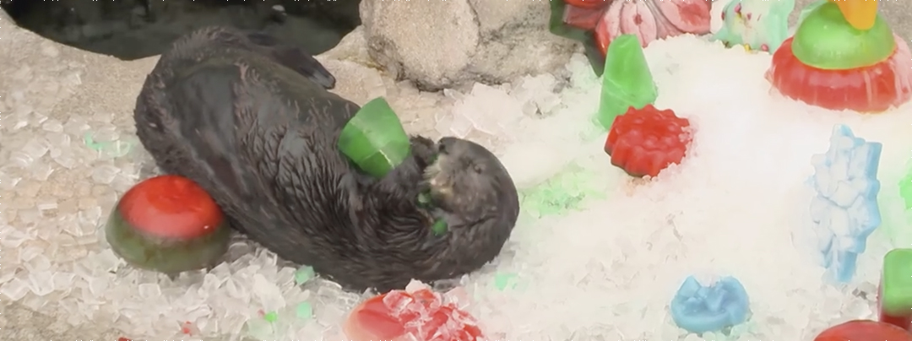

Enrichment Proposal ——
Enhancement for the sea otter orphans:
What is environment enrichment?
According to Newberry in Environmental enrichment: Increasing the biological relevance of captive environments [1], the general goal and criteria of environment enrichment should be improving the animal’s health, promoting the animal’s reproductive success, and promoting the animals’ inclusive fitness. What should be paid attention on is that there are two distinct kinds of environment enrichment with different ultimate goal. For the animal destined for release, the goal of modifying environment is to make the captivity resemble the future release site for the sake of future reintroduction. In this case, the animals’ natural behaviors should be elicited and cultivated. On the other hand, for the animals that are kept indefinitely in captivity for use by people, it is neither necessary nor desirable for them to remain adapted to the natural environment. In this case, the key rests in helping them adapt to the captive conditions.
As for how to measure the effect of the environment and the welfare of animals, Newberry thought that compared with measuring the abnormal behaviors and negative emotion of animals, it is more reliable and feasible to measure the physical health status, including the harmful aggression tendency, trend of escaping, and the status of muscular and skeletal fitness.
Ways can be used in enriching environment, including increasing food variety to stimulate animals’ food searching and handling skills, triggering the natural and inherent way of food intaking, providing suitable substrate, providing optimal physical spatial structure, providing camouflage and shelter for animals to gain sense of safety, providing views of natural sceneries, making tourists less visible, and providing sound enrichment.

Introduction of the sea otter
The sea otter is one of the smartest species in the world. It has the densest fur among animals, and it is the reason why sea otters are widely hunted by people to make high quality leather garments. The Sea Otter was almost completely extinct by 1911 with less than 2,000 of them remaining. However, successful conservation efforts managed to recover the population of the sea otter. In most areas it is illegal to harm or to kill them due to the fact that they remain listed as an Endangered Species. The sea otter mainly reside in the Northern Pacific Ocean coast area, especially the coast area of California[2]
Experts believe that it can move on land but that it chooses not to. It does very well living exclusively in the water [3]. The sea otter is a “newcomer” mammal of ocean life, compared with other marine mammals like the sea lions and the whales, which just waded into the ocean a mere couple million years ago [4].

Picture courtesy: Deep Look
One of the consequence of this is that the sea otter do not have blubber, so they have to spend a lot of time in a day grooming to recover the waterproof and heat trapping capability of the fur after diving [5].
Ethogram of the sea otter in wild [6]:
| Behaviour | Description |
|---|---|
| Resting on water | Floating on back either singularly or as a group. Otters head will remain dry whilst the majority of the body is submerged. Otter’s eyes will be open and they can be looking around their environment. |
| Resting on land | Otter lying down either on stomach or back. Eyes are open and otter is looking around at its surroundings, could be either alone or with other individuals. If on stomach then all four limbs will be tucked under the body. |
| Feeding | Resting on back in water or on land with food item on their stomach. Can involve using stones to smash against the outside of food items to crack shells but not necessity. Item is moved from stomach to mouth via forelimbs and placed between teeth which are utilised to masticate item before swallowing |
| Foraging | Otter has moved from the water’s surface moving down head first and utilises whiskers, nose and forelimbs to touch obstacles. This can include pulling items off of the floor or sides, or can be grabbing objects floating free in the water. These items are then held in the forelimbs as the animal moves back to water surface. It no items are brought back up consider the previous movements to be diving (see below) not foraging. |
| Play | Two or more sea otters in close proximity (less than one body length away from each other) or touching. These interactions can occur both on land and on water. Includes rolling over each other. Running at each other as well a play fighting and pushing |
| Grooming-self | Using mouth, tongue or forepaws to rub at sections of own fur. In water this is achieved whilst floating on back. Can include intermittent bouts of rolling over in the water. |
| Allogrooming | Using mouth, tongue or forepaws to rub at sections of a conspecifics fur. In water this can be achieved whilst floating on backs with one individual placing their head and upper torso on the stomach of another. Most often seen between juveniles and adults but can be individuals of any age. |
| Swim | Movement through water, can either be on the surface of the water or underneath the surface. Otter is not on its back for any time whilst swimming and utilises hind limbs and tail primarily so little movement from forelimbs which hang down from the body. |
| Locomotion | Movement on terrestrial environment. Movement of all four limbs. May be interspersed with occasional moments of standing still up on hind legs to observe surroundings. If this stop and observe motion is less than 5 seconds long include it as part of locomotion. If longer than this then it is alert behaviour. |
| Sleep | Either on back floating on the water or on back or stomach on land. If on water individuals will often anchor by wrapping themselves in kelp or holding on to other individuals usually by linking forepaws. Difference between resting and sleeping is that eyes are shut and individual gives no indication that it is aware of its surroundings. Head will be rested on chest |
| Dive | Movement from terrestrial environment to water. Individual slides head first into the water. Is the link between terrestrial locomotion and swimming |
| Vocalisation | Any noises made by the otters could be towards conspecifics or humans. Noises can be for any length of time and are accompanied by opening of the mouth |
| Sucking | Young otter lying on the stomach of female nursing. Female will be on her back either on land or floating in water. |
| Interaction with humans | Any interaction with humans in the enclosure this could be for training purposes as in the picture or feeding or just following |
| Alert | Animal stands still either on hind legs as or on all four limbs. Head is up and looking around the environment. This must occur for longer than 5 seconds continuously. |
| Interact with enrichment | Individuals touching of sniffing any objects other than food items added to the enclosure. This can be both on land and in the water and can be a single animal or group interaction. |
Precedent works of sea otter enrichment:
 Christmas ice treats, Monterey Bay Aquarium
The "frosting" is made of minced clams.

Artificial kelp, Monterey Bay Aquarium
The sea otters like to wrap themselves with kelps while taking a rest.
Artificial kelp, Monterey Bay Aquarium
The sea otter pup was chasing after the moving artificial kelp.
Puzzle Play with Sea Otter Mari, Shedd Aquarium
The food-filled puzzle feeders offered the sea otters, Mari, a fun, full-body workout, from brain to paws.
Enrichment for a sea otter, Oregon Zoo
Diving enrichment for Otter 808, Monterey Bay Aquarium
Diving enrichment for Otter 808, Woodland Park Zoo
The wreath proved the perfect size for the river otters to swim through as they picked off the frozen fish. These two Two species share a lot of behavioral similarities, so I took this precedent into consideration.
Interesting findings from research:
— From observation of the precedent works of sea otter enrichment, it can easily find out that the sea otters were extremely active and interested in novel things. These toys are in fruitful colors and some of them have food contained or attractive scent diffused. They tended to touch, grasp, and hold the toys with their held in the forelimbs. If the toys are in motion, they tended to chase after them.
video courtesy: Monterey Bay Aquarium
— An interesting fact is that sea otter pups float as soon as they are born, but need to learn swimming, which is not an inherent behavior of the sea otter. In the wild, mom would tow the pup between feeding and resting area [7]. From the video above(0:28 - 0:31), it can be discovered that the sea otter pup was trying to turn over clumsily but failed. I conjecture that the action of turning over and also rolling in the water are not inherent, which should be taught and are ubiquitous in a lot of behaviors listed in the ethogram above.
Video courtesy: innerotter, UCSC
— Rolling in the water is an important behavior that is almost involved in all social and survival behaviors.
Design background, motivation, and goal:
Inspired by the Saving Sea Otter 696, a case of the sea otter surrogate program, which is a part of the sea otter rescuing programme of the Monterey Bay Aquarium, I am interested in designing enrichment device for raising and training sea otter in such kind of program. I believe that the sea otter 696 would not be the only stranded sea otter pup that needs help from humans to survive and return to nature eventually. Devices and processes should be designed to make humanitarian assistance more effortless.
In this case, I would focus on designing surrogate devices that help the sea otter orphans learn and improve their skills of swimming and doing basic rolling actions in the water. Hopefully, basic social skills can be triggered. The surrogate devices substitute the roles that should originally be played by the moms and peers in the natural states.
Outcome Based Workflow:
| Behavior | Components | Adaptive relevance | Implement | Objects |
|---|---|---|---|---|
| Learning | Swimming | The sea otter pups can float as soon as they are born, but need to learn swimming. | The sea otter mom would tow the pup between feeding and resting area. | A robot that can tow the pup around and encourage them to swim. It can also be something which the pup can chase after. |
| Learning | Rolling in the water | -- | -- | A device that can trigger the pup’s interest in turning over and give them some physical assistance. |
| Feeding | Foraging | High metabolism rate. Otters eat from 15% to 25% of their body weight each day. They can spend up to five hours each day finding the food that they need in order to survive. Foods can be hard to be seen, which could be covered. | Long time is spent in exploring foods. Smell the scents to trace the food, and then dig them out. | Provide food as the reward of playing games or toys. Food hidden in novel places. Food scent dispersed as the cues to trigger the exploration behavior |
| Social | Wrestle | Seek out others for fighting/competition/playing. | Lessons learned for social skills | Design a robot as the playmate of the sea otters that exhibit the behavior of cruising and rolling in water as like a sea otter. |
| Social | Chasing | Seek out others for playing. | Lessons learned for social skills | Design a robot as the playmate of the sea otters that exhibits the behavior of cruising and rolling in water as like a sea otter. |
| Rest | Anchor | When otters are taking rest or grooming while floating on the water surface, they are easy to be drifted by the water flow. | Sea otters wrap themselves in long strands of kelp, as anchor, which grow from the sea floor all the way up to the surface of the water. | Provide artificial kelp for the sea otter to wrap themselves with. |
| Rest | Light / Sunbath | They are known to sleep in the heat of the day before continuing to hunt for food and to play in the late afternoon. | Must locate resource, opportunities to seek sun. | Provide both high and low temperature areas. |
| Rest | Grooming | Do not have blubber. | They have to spend a lot of time in a day grooming to recover the waterproof and heat trapping capability of the fur after diving. | Provide absorbent and soft material for them to roll on. |
| Rest | Rafting | Rest floating on their backs. The mother and the pup are easy to be drifted away from each other because of the water flow. | Sea otters hold on to each other while sleeping. | Provides handles. |
| Explore | Search for new territory | Abandoned dens can not alway be found. | They would take over the dens that beavers may have left behind. If they can not find the existent dens, they would make a nest from branches and twigs along the rocky edges or make burrows in the land around the water. | Provide pre-made dens made by branches and twigs, which are similar to dens of beavers along the rocky edges by the water. Provide branches and twigs for sea otters as the material of dens. Provide soft-earth area near the water, where otters can dig burrows. |
Ideas and sketches:
Reference: